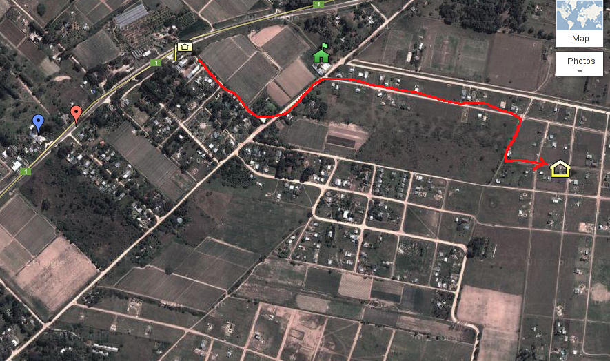
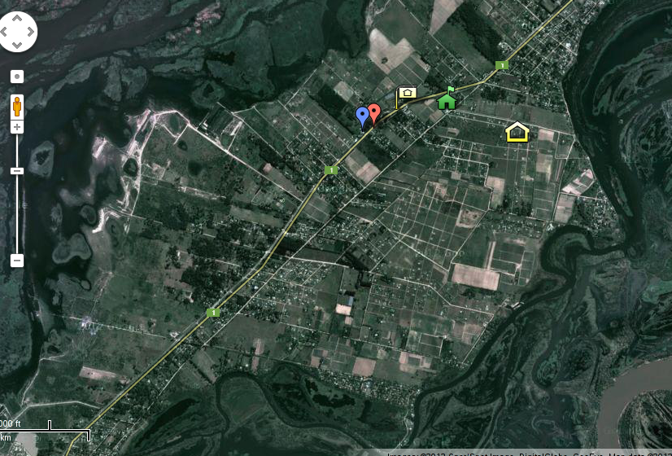
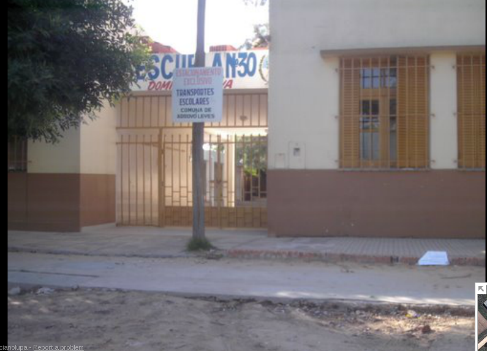

Mi casa queda en Arroyo Leyes, Ruta 1 km 12,5 hay que doblar hacia el este por la calle nro 38
dónde hay una virgen en la esquina, sobre la cuadra de la comuna, luego
hay que hacer
más o menos 1000 mts hacia el este como indica la imágen.
 
En el camino van a pasar por la escuela 30 que está marcada en verde en la imágen.
Perdón pero no tengo ninguna foto actualizada de mi casa, esta
que pueden ver acá está sacada
parado desde el este, uds vienen desde el oeste (la ruta) así
que la van a ver desde el patio,
van a ver la galería que tiene unas ventanas con arcadas.